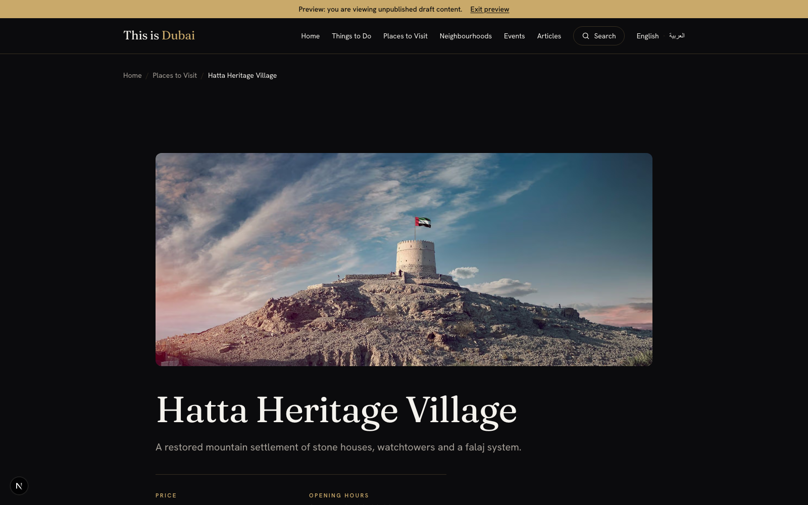

Hello Digital Team,
This one is about a request that sounds trivial and is not: letting someone outside the CMS see a page before it goes live. It comes up on every project, usually a few weeks before go-live, and the answer touches authentication, caching, localization, search indexing and publishing governance. Here is how it works, what broke on the way, and the decisions worth making on purpose.
Every content team I have worked with eventually asks the same thing, a few weeks before go-live:
"Can you send the client a link so they can see the new page before we publish it?"
It sounds like a settings toggle. It is not. On a headless Optimizely SaaS build it is a small feature with a surprising amount of architecture behind it, and the way you answer it says a lot about how your publishing governance actually works.
The reviewer here is almost never a CMS user. They are a legal reviewer, a brand manager, a client sponsor. They will not be given an account, they will not be trained, and they will open the link on a phone. They need to see the page as it will look, know that it is not live yet, and reply "approved".
Optimizely SaaS gives you a genuine on-page preview: the CMS iframes your application and passes a short-lived token so your app renders the draft, updating live as the author types. It is excellent, and it is the right tool for the person doing the editing. It is also bound to the editing session, so you cannot copy that URL into an email on Tuesday and expect it to work on Thursday. The external-reviewer case is a different feature, not the same one used differently.
| Layer 1: editor preview | Layer 2: stakeholder link | |
|---|---|---|
| Who is it for? | The author, while editing | A reviewer with no CMS account |
| How long does it last? | Minutes, tied to the session | Days, chosen when the link is created |
| Where does it live? | Inside the CMS editor | Any browser, any device |
| Ships out of the box? | Yes | No, you build it |
One more distinction worth putting in a glossary: a deployment preview shows unreleased code against published content; a stakeholder preview shows released code against unpublished content. Conflating them leads to someone approving a page nobody can actually ship.
In a coupled CMS the server renders the page, so it can render a draft of it. Go headless and your application owns rendering: nothing renders a draft unless you write the code that asks for one.
And Optimizely Graph gives you two very different credentials:
Only the second can see a draft, and it is effectively a super-user credential. So the request "let this reviewer see the draft" quietly contains "without letting anything that can read every draft on the estate reach the browser". That constraint drives the whole design.
The token is a signed permission slip, not a credential. It authorises the server to make one privileged read on the bearer's behalf, for one item, until one timestamp.
The token is a signed statement, not a credential. It says "the bearer may view this one item, in this locale, until this timestamp". It carries no keys. It authorises the server to do the privileged read on the bearer's behalf, and only for that one item. The keys never move.
The token is two base64url segments joined by a dot: base64url(payload).base64url(HMAC-SHA256(payload, secret)). The payload is plain claims: which item, locale, version, where to land, the access mode, and an expiry. Two properties matter most:
| Location | What lives there | How long |
|---|---|---|
The share URL (?token=…) | the token, while the author sends it | wherever it is pasted |
| The reviewer's browser cookie | the same token (http-only, secure) | until the token expires |
| A second cookie | a "draft mode is on" flag, no payload | same |
| A database | nothing at all | there is no database |
The design is deliberately stateless: the token is minted, handed out, and the server keeps no record of it. Every page view re-verifies the signature, the expiry, and that the token's item matches the page being rendered. That buys no table to migrate, no rows to expire, no shared database, and free horizontal scaling. It has one honest cost, below.
Five ways, and the last is your emergency lever:
The honest cost of statelessness: you cannot revoke a single link without rotating the secret. For stakeholder review that is a fair trade, and you lean on the short expiry, the single-item scope, and the network gate to keep the blast radius small. Add a stored deny-list only when per-link revocation becomes a hard requirement (embargoed or regulated content).
The most common failure mode for these links is not a clever attacker; it is an email forwarded one hop too far. So the default is Internal: the link opens only from an allow-listed set of network addresses (office egress, VPN), and an off-network request is refused at the edge before any draft is read. Shareable (login-free from anywhere) is an explicit, per-link opt-in for a genuine external reviewer with no CMS login and no way onto the network.
The mode is a signed claim, so it cannot be escalated by editing the URL. The allow-list fails safe (empty list denies), and it is strict by design (a request to localhost carries no forwarded address, so it must itself be allow-listed to pass). Trust only the client address your own platform stamps, never one a client could type.
Six things went wrong building this, four of them silently. The sharpest ones:
The newest draft is not the highest version number. Listing versions and taking the highest looked correct: the preview rendered, the banner showed. It was rendering the published page, because the draft carried a lower version number than the published one. Select on the version's status and break ties on last-modified, never on the number. And write the acceptance test on a difference: make an unpublished edit and assert the preview shows it while the live URL does not. A preview that silently shows published content passes every other test you would think to write.
Draft mode is a boolean, and you need a scope. Most frameworks have a draft-mode cookie that says "this visitor may see drafts". Turn it on and browse to another page and it shows that draft too: one link had unlocked the whole estate. The flag has no idea what the link was for. Keep the signed token in an http-only cookie alongside the flag, re-verify it every request, and serve unpublished content only when the token's item matches the page. You only find this by deliberately wandering off the page you were sent.
The cache would have published the draft for you. A shared, path-keyed content cache is right for published content and a leak for a draft: the first reviewer writes the unpublished version into a cache the anonymous public then reads. Draft reads must bypass the shared cache completely. The rule: any cache keyed on something less specific than the viewer's authorization is a leak waiting for privileged content.
The localhost trap (from the access work). An Internal link opened against a local dev server was refused, and the instinct was "the gate is broken". It was not: a request to localhost is loopback, so it carries no forwarded address, and the office IP can never match it. The allow-list only means anything once the app sits behind a proxy that stamps the real client address. Decide the local rule on purpose and write it down, or someone files a bug against a feature that is working correctly.
Two smaller ones, in one line each: the official SDK authenticates only as the public key or the editor's token, so the privileged read needed a small transport-layer override; and on a multilingual site the CMS path already carries its language segment, so passing it straight through double-prefixes the URL. Every preview test has to be run in the second language too.
Everything above makes the link work. The thing I underestimated is making it obtainable, and it is what your content team judges you on. My first answer was a small admin page with a shared secret. It worked, and it was wrong: asking authors to hold a secret is a smell, and asking them to leave the CMS to find the page they were already editing is a workflow nobody uses twice. The measure is not "can a link be produced", it is "does the author reach for it instead of asking a developer".
On a SaaS CMS you probably cannot build the CMS-12-style add-on (no UI extensibility), so check that early. The seam you do have is the preview pane itself: the CMS renders your app in an iframe while the author edits, which is your UI, inside their CMS, on the page they are looking at. A single button there gets you most of the way. The detail that makes it good: the CMS appends a short-lived preview token to that iframe, issued to an authenticated editor. Send it back to your content API and see whether it is accepted, and you have proof the request came from someone logged into the CMS. The CMS login is the authentication: no second login, no shared password.
Two cautions: validate that token against the documented contract (that the content API accepts it), not against an undocumented signing-key relationship that can change without notice; and be honest about what it proves, which is a live editor session, not a specific person or rights to the item.
Cheap at design time, awkward to retrofit:
| Guardrail | Why |
|---|---|
Force noindex on any draft response, at the edge | An unpublished page must never reach a search index |
| Make the link read-only | A reviewer with no login should never be able to trigger a publish |
| Fail closed on missing config | No signing secret, no allow-list: mint nothing, allow nothing |
| Fall back to published on any error | A preview link should degrade to the live page, never to a 500 |
| Keep privileged credentials server-side | The reason the whole design exists |
| Separate signing domains | If share links and any admin session share a secret, add a distinguishing prefix, or a share token a reviewer holds for weeks is byte-for-byte a valid admin session |
The engineering is a few days; the policy questions outlast it. Decide, on purpose: who can generate a link (attribution), the default lifetime (whatever you set is what almost every link uses), whether a link can be revoked before expiry, whether generated links are logged (a "no" that will not survive a regulated audit), and what happens on publish (the link should quietly become the live page, which is free if your cache invalidates on publish). I would rather ship a small feature with the gaps written down than a bigger one with them assumed away.

The feature that starts as "can you just send them a link" ends up touching authentication, caching, localization, search indexing, and publishing governance, and it leaves almost nothing behind: no table of links, no job to expire them, no sync between systems. A link is a signed sentence that says "show this one draft, to someone on this network, until this time", read honestly on every request until the clock runs out. Get the defaults right, fail closed, and keep the real credential on the server, and a one-click share button turns out to be a small, well-behaved piece of security engineering rather than a liability.
I would like to hear how other teams have handled per-link revocation and attribution when the reviewers are external and the authors are not all in the same organization.